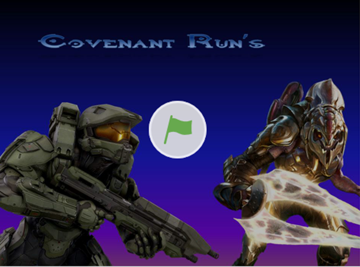
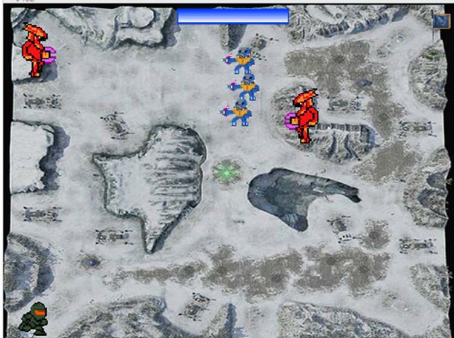
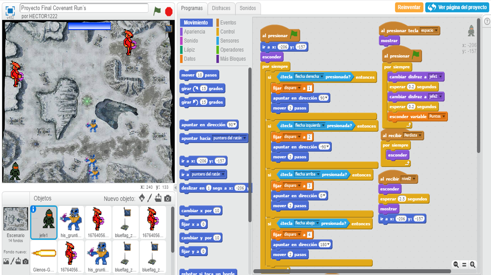

Proyecto en Scratch: Covenant Run´s
Durante el primer parcial del presente semestre realizamos un videojuego con el programa de scratch, con el cual de una manera rápida y fácil de entender, colocamos diversos comandos con los que el jugador podía controlar al personaje del nivel. De tal manera que surgió la idea de crear un juego inspírado en el universo de halo, en el cual nuestro personaje deberá cruzar un campo lleno de enemigos hasta llegar a un punto de control.
  
Estas son algunas imagenes tomadas del juego principal dentro de lo que se destaca:
- La estructura del juego
- Los diferentes enemigos que se utilizaron
- La forma forma del nivel
- El ambiente en el que se sitúa
- Las diferentes funciones que utilizamos para realizar el juego
Opinión personal
En resumidas cuentas este fue uno de los primeros trabajos realizados en equipo que con gran esfuerzo se logró, generandome una gran satisfacción por las horas invertidas en este trabajo, podiendo así conocer algunos programas que no manejaba